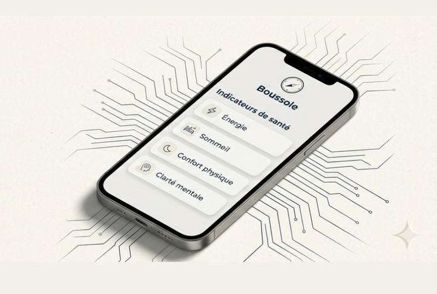

Un suivi doux, pour retrouver des repères.
Chaque jour ne se ressemble pas. Boussole vous aide à vous situer sans vous juger : 4 repères simples, une tendance sur 14 jours, et une synthèse PDF si vous le souhaitez.
Guidé par 4 repères. Sans perfection.
Vous notez ce qui compte, pas tout ce qui passe. L’idée : un signal fidèle, assez simple pour tenir dans la durée.
-
Énergie
Un thermomètre rapide pour sentir où vous en êtes, sans sur-analyser.
-
Sommeil
Qualité perçue, récupération, rythme. Juste assez pour relier “repos” et “journée”.
-
Confort
Douleurs, tensions, tolérance physique : un repère global, sans jargon.
-
Clarté mentale
Pour capter le brouillard, l’attention, la charge mentale… sans vous culpabiliser.
Ce suivi est fait pour préserver l’énergie. Si vous ne notez pas un jour, ce n’est pas un “échec”. C’est juste un jour.
Sur mobile, comme une appBoussole fonctionne dans le navigateur et peut s’ajouter à l’écran d’accueil (PWA), sans compte.
Voir la tendance, pas le bruit.
Une journée isolée ne raconte pas toute l’histoire. La vue 14 jours aide à remettre les variations dans leur contexte.
-
14 jours au même endroit
Une lecture simple pour repérer les phases : mieux, stable, plus difficile.
-
Un repère de journée
Une synthèse visuelle (type vert / orange / rouge) pour aider à décider “quoi faire ensuite”.
-
Décider avec plus de calme
Adapter le rythme, poser des limites, préparer une discussion. Sans injonction.
Stop aux raccourcis
“Un bon jour” ≠ “tout est réglé”. “Un mauvais jour” ≠ “tout s’effondre”. La tendance sert à éviter les conclusions trop rapides.
Vous gardez ce qui vous sert. Le reste, vous le laissez.
Partager sans se justifier.
Quand vous le choisissez, vous exportez une synthèse PDF. C’est un support de discussion, pas un verdict.
-
Synthèse claire
Repères, tendance et notes : un format court qui aide quand “il y a trop à dire”.
-
Utile en consultation
Un point de départ concret pour discuter de la suite (avec un professionnel si besoin).
-
Toujours volontaire
Rien n’est partagé automatiquement. Exporter est un choix explicite, à chaque fois.
Un outil médical. Boussole ne fournit pas de diagnostic, ne prescrit pas de traitement, et ne remplace pas une consultation.
Ce que Boussole estUn outil d’information et de suivi de repères, pour mieux se situer et décider plus sereinement.
Confiance, en clair. Vous gardez le contrôle.
Le cadre est simple, assumé, et aligné avec le la confidentialité d’abord.
Vos données restent sur votre appareil. Toujours.
Boussole n’envoie rien “dans le dos”. Pas de cloud requis pour fonctionner. Pas de pixels publicitaires. Pas de profilage.
-
Sans compte
Pas d’inscription nécessaire pour utiliser le module.
-
Sans tracking
Pas d’outils marketing intrusifs pour suivre vos usages.
-
Sans promesse
Pas de discours magique, pas de résultat garanti.
-
Moins de charge mentale
Un format volontairement simple : pour vous aider, pas pour vous occuper.
-
Votre export, votre décision
La synthèse PDF est optionnelle. Vous choisissez si, quand, et à qui vous la montrez.
-
Un outil, pas une injonction
Si vous traversez une période compliquée, l’objectif reste de préserver l’énergie, pas de “tenir un streak”.
Simple, clair, étape par étape.
Boussole avance sans bruit : utile d’abord, puis mieux. Vous pouvez suivre l’évolution ou soutenir le projet.
-
Déjà disponible
Saisie rapide des repères, vue 14 jours, note libre, export PDF volontaire.
-
En amélioration
Lisibilité, ergonomie, petites aides au rythme, et passerelles avec l’écosystème.
-
Rejoindre
Un espace pour suivre, poser des questions, et soutenir une approche “méthode avant le bruit”.

Besoin de contexte ? Découvrez la carte d’ensemble : modules, parcours, et la logique la confidentialité d’abord du projet.